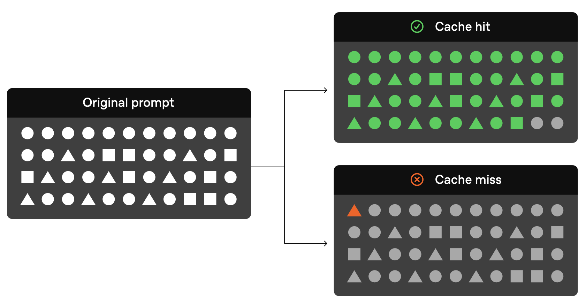

Prompt caching#
Reduce latency and cost with prompt caching. Model prompts often contain repetitive content, like system prompts and common instructions. OpenAI routes API requests to servers that recently processed the same prompt, making it cheaper and faster than processing a prompt from scratch. This can reduce latency by up to 80% and cost by up to 75%. Prompt Caching works automatically on all your API requests (no code changes required) and has no additional fees associated with it. Prompt Caching is enabled for all recent models, gpt-4o and newer.
This guide describes how prompt caching works in detail, so that you can optimize your prompts for lower latency and cost.
Structuring prompts#
Cache hits are only possible for exact prefix matches within a prompt. To realize caching benefits, place static content like instructions and examples at the beginning of your prompt, and put variable content, such as user-specific information, at the end. This also applies to images and tools, which must be identical between requests.
Prompt Caching visualization#

How it works#
Caching is enabled automatically for prompts that are 1024 tokens or longer. When you make an API request, the following steps occur:
Cache Routing:
Requests are routed to a machine based on a hash of the initial prefix of the prompt. The hash typically uses the first 256 tokens, though the exact length varies depending on the model.
If you provide the
userparameter, it is combined with the prefix hash, allowing you to influence routing and improve cache hit rates. This is especially beneficial when many requests share long, common prefixes.If requests for the same prefix and user combination exceed a certain rate (approximately 15 requests per minute), some may overflow and get routed to additional machines, reducing cache effectiveness.
Cache Lookup: The system checks if the initial portion (prefix) of your prompt exists in the cache on the selected machine.
Cache Hit: If a matching prefix is found, the system uses the cached result. This significantly decreases latency and reduces costs.
Cache Miss: If no matching prefix is found, the system processes your full prompt, caching the prefix afterward on that machine for future requests.
Cached prefixes generally remain active for 5 to 10 minutes of inactivity. However, during off-peak periods, caches may persist for up to one hour.
Requirements#
Caching is available for prompts containing 1024 tokens or more, with cache hits occurring in increments of 128 tokens. Therefore, the number of cached tokens in a request will always fall within the following sequence: 1024, 1152, 1280, 1408, and so on, depending on the prompt’s length.
All requests, including those with fewer than 1024 tokens, will display a cached_tokens field of the usage.prompt_tokens_details Response object or Chat object indicating how many of the prompt tokens were a cache hit. For requests under 1024 tokens, cached_tokens will be zero.
Example response:
"usage": {
"prompt_tokens": 2006,
"completion_tokens": 300,
"total_tokens": 2306,
"prompt_tokens_details": {
"cached_tokens": 1920
},
"completion_tokens_details": {
"reasoning_tokens": 0,
"accepted_prediction_tokens": 0,
"rejected_prediction_tokens": 0
}
}
What can be cached#
Messages: The complete messages array, encompassing system, user, and assistant interactions.
Images: Images included in user messages, either as links or as base64-encoded data, as well as multiple images can be sent. Ensure the
detailparameter is set identically, as it impacts image tokenization.Tool use: Both the messages array and the list of available tools can be cached, contributing to the minimum 1024 token requirement.
Structured outputs: The structured output schema serves as a prefix to the system message and can be cached.
Best practices#
Structure prompts with static or repeated content at the beginning and dynamic, user-specific content at the end.
Use the
userparameter consistently across requests that share common prefixes. Select a user granularity that keeps each unique prefix-user combination below 15 requests per minute to avoid cache overflow.Monitor your cache performance metrics, including cache hit rates, latency, and the proportion of tokens cached, to refine your strategy.
Maintain a steady stream of requests with identical prompt prefixes to minimize cache evictions and maximize caching benefits.
Frequently asked questions#
How is data privacy maintained for caches?
Prompt caches are not shared between organizations. Only members of the same organization can access caches of identical prompts.
Does Prompt Caching affect output token generation or the final response of the API?
Prompt Caching does not influence the generation of output tokens or the final response provided by the API. Regardless of whether caching is used, the output generated will be identical. This is because only the prompt itself is cached, while the actual response is computed anew each time based on the cached prompt.
Is there a way to manually clear the cache?
Manual cache clearing is not currently available. Prompts that have not been encountered recently are automatically cleared from the cache. Typical cache evictions occur after 5-10 minutes of inactivity, though sometimes lasting up to a maximum of one hour during off-peak periods.
Will I be expected to pay extra for writing to Prompt Caching?
No. Caching happens automatically, with no explicit action needed or extra cost paid to use the caching feature.
Do cached prompts contribute to TPM rate limits?
Yes, as caching does not affect rate limits.
Is discounting for Prompt Caching available on Scale Tier and the Batch API?
Discounting for Prompt Caching is not available on the Batch API but is available on Scale Tier. With Scale Tier, any tokens that are spilled over to the shared API will also be eligible for caching.
Does Prompt Caching work on Zero Data Retention requests?
Yes, Prompt Caching is compliant with existing Zero Data Retention policies.